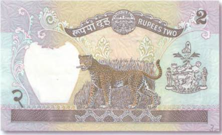
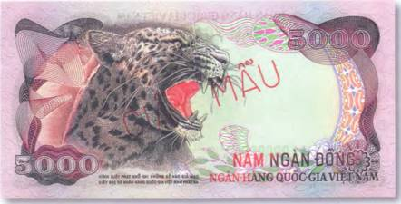
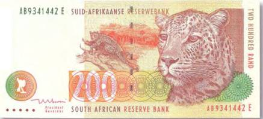
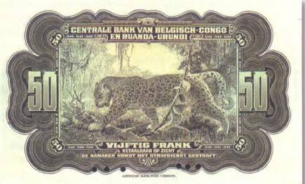
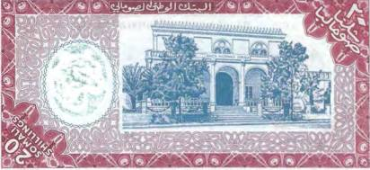
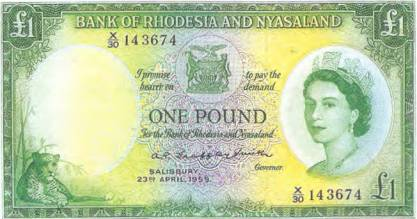
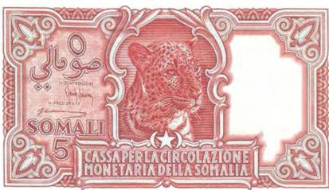
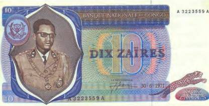

Тайны бумажных денег : Леопард и таинственные культы

Леопард по своим размерам и силе серьезно уступает тигру. И если на охоте их дорожки вдруг пересекаются, спешит покинуть место встречи первым. Прекрасно лазая по деревьям, эта пятнистая кошка нередко и на свою добычу нападает сверху. Там же, в ветвях деревьев, леопард устраивает себе место для дневного отдыха. А нередко в развилках стволов прячет свою добычу. Если учесть, что вес добываемых леопардом оленей и антилоп достигает 80 кг, то становится понятным, почему его шейные и спинные мускулы развиты даже лучше, чем у тигра. Не всякий хищник семейства кошачьих способен вскарабкаться на высоту в несколько метров, да еще с такой ношей в зубах. Леопарду одну из своих банкнот посвятил Непал. Это 2 рупии 1981 г. (рис. 216).

Там, где охотничий ревир леопардов соприкасается с территорией проживания человека, между ними идет жестокая борьба за выживание. Охотничьи угодья пятнистых хищников порой тянутся на десятки, а то и сотни километров. И человеку для выращивания риса и овощей необходимы огромные площади. В неурожайные, засушливые годы отношения между человеком и зверем могут вырваться в откровенную вражду. Голод заставляет человека менять свои привычки и отправляться на охоту там, где он испокон веков занимался лишь земледелием. Иногда меняет свои привычки и хищник… Во времена, когда Индия еще была английской колонией, местами учащались нападения хищников на людей. В большинстве случаев людоедами становились тигры. Часто это были раненые либо ослабленные старостью звери, для которых охота на человека являлась последним шансом сохранить собственную жизнь. Но имеются свидетельства, когда на человечину переходил и леопард.

Стоит добавить, что если леопард и уступает своему полосатому собрату в силе, то в грациозности и окраске он еще может дать тигру форы! Ну да посудите сами! Представленная здесь бона имела хождение во Вьетнаме в 70-х гг. прошлого века (рис. 217).
То же касается и льва. Довольно странным может показаться тот факт, что африканские аборигены больше боятся не льва, а его меньшого брата — леопарда. Это в самом деле так. Леопард, встречающийся практически на всем материке, хитрее, злее и коварнее льва. И если львами-людоедами в основном становятся старые и больные животные, то на леопардов это «правило» не распространяется. И вполне здоровый леопард может напасть на человека. Первоклассное изображение этого опасного хищника можно встретить на купюре Южной Африки в 200 рандов 1999 г. (рис. 218).

Африканский леопард (Panthera pardus) — один из наименее изученных представителей семейства кошачьих. Длина тела у взрослого самца почти 1,5 м, а высота в холке — 70 см. Известно, что выше, чем леопард, не может прыгнуть не один хищник, за исключением разве что пумы. Учеными были зафиксированы прыжки зверя на дерево высотой в 5,5 м. Это абсолютный рекорд.
Иногда до специалистов долетают слухи о неизвестных науке диких кошках, которые населяют леса Африки и очень похожи на леопардов. Только выглядят они крупнее и имеют разительные отличия в окраске меха. Возможно, что это бастарды, то есть особи крупных кошачьих, родившиеся от двух разных видов животных, например леопарда и льва.
На боне Бельгийского Конго номиналом в 50 франков 1952 г. тоже запечатлен африканский леопард (рис. 219).
Однако в его внешности заметны определенные отклонения. Уж не бастард ли это?
Подобные скрещивания действительно возможны среди крупных хищников семейства кошачьих. Исключение составляет только снежный барс. Кстати, мужские особи от подобного скрещивания не способны к размножению. Чего нельзя сказать о самках-бастардах. Они без труда могут дать начало новой жизни. Чаще всего леопарды охотятся по ночам. Что значительно осложняет наблюдения за этими животными.


Леопарды украшают денежные купюры африканских стран не только в виде рисунков, но и в качестве водяного знака, как это видно на сомалийской боне в 20 шиллингов 1962 г. (рис. 220).
«Деятельность леопардов прекращена, но я сомневаюсь, что удалось разрушить саму организацию», — сказал губернатор Сьерра-Леоне сэр Эдвард Миэуэзер в 1913 г., выступая по делу о леопардах-оборотнях. Об этой захватывающей истории российскому читателю впервые поведал писатель Николай Непомнящий. А первое упоминание о жутком магическом культе леопарда попало на страницы газет в 1854 г. Именно тогда в местечке Порт-Локко (Сьерра-Леоне) по подозрению в колдовстве и оборотничестве был задержан один знахарь. И прежде чем его заживо сожгли, колдун признался судьям, что по ночам превращался в пятнистого хищника и убивал людей.
Возможно, что блюстители закона слишком рьяно взялись за то дело, потому как еще со времен инквизиции известно, что не все чистосердечные показания заслуживают доверия…
Отдыхающего в тени деревьев леопарда можно увидеть на давно вышедшей из обращения банкноте Родезии в 1 фунт 1959 г. (рис. 221).
О древних магических культах поклонения леопарду известно давно и не только в Африке. Но именно в Африке они показали себя с жуткой стороны (рис. 222). В конце XIX — начале XX в. по британским африканским колониям прокатилась волна чудовищных убийств, сведения о которых колонизаторам не удалось скрыть от общественности. Рядом с жертвами всегда находили следы крупных леопардов. А трупы людей были изувечены до неузнаваемости. Выдвигалось множество версий. От нападений обычного леопарда-людоеда до вмешательства потусторонних сил. Кроме того, за период с 1899 по 1912 г. по подозрению в причастности к культу леопарда было взято под стражу более 500 человек.

Некоторые из пойманных сектантов были повешены. Как раз после этой казни губернатор Сьерра-Леоне и сказал приведенные выше слова. Однако таинственные культовые убийства прекратились лишь на время.

По легенде, при посвящении в таинство между будущим человеком-леопардом и его животным-тотемом устанавливается некое «кровное родство». И если вдруг погибает один, то следом за ним умирает и другой.

В 1946 г. серия зверских убийств всколыхнула Нигерию. Тогда полицией было найдено более 80 изуродованных человеческих тел. У некоторых жертв отсутствовали голова и сердце. И снова были обвиняемые, и снова выносились смертные приговоры. По обвинению в культовых убийствах в том году казнили 18 человек. А чуть позже неподалеку от места казни были обнаружены 18 мертвых леопардов… Совпадение?
Еще одно изображение пятнистой кошки украсило купюру демократического Конго номиналом в 10 заиров 1971 г. (рис. 223).